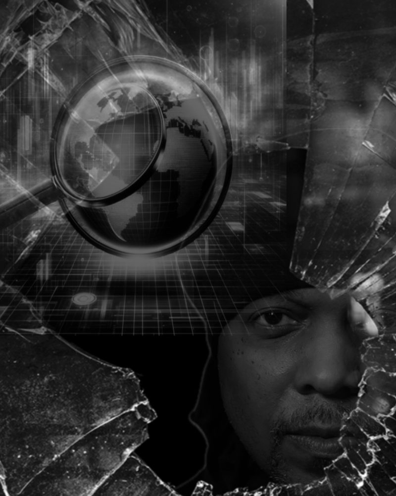
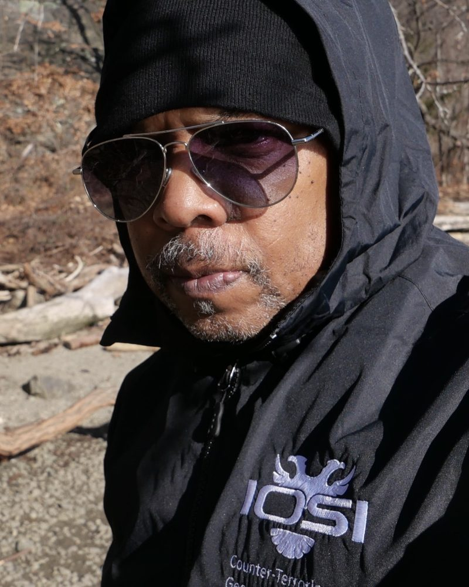
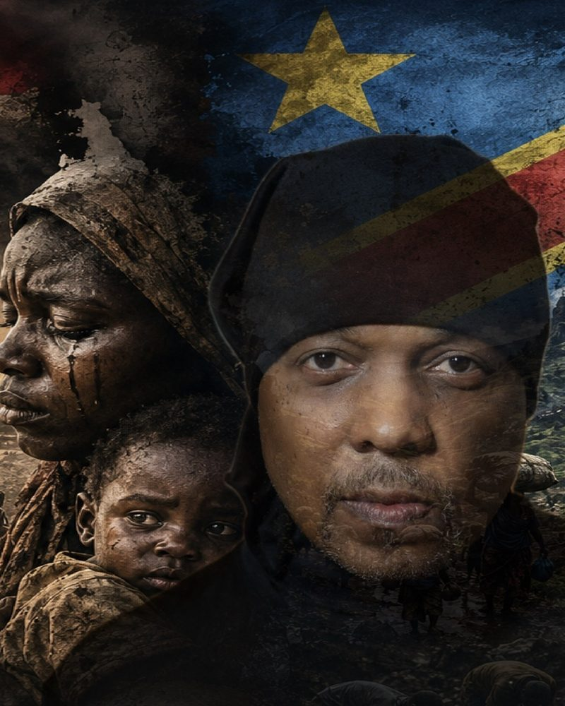
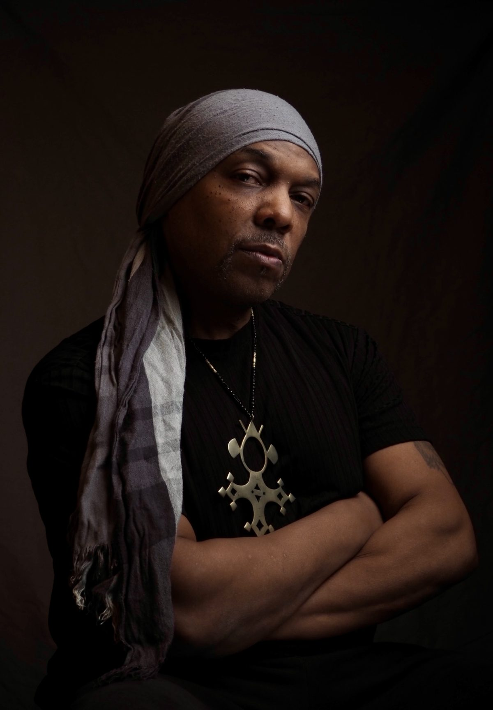
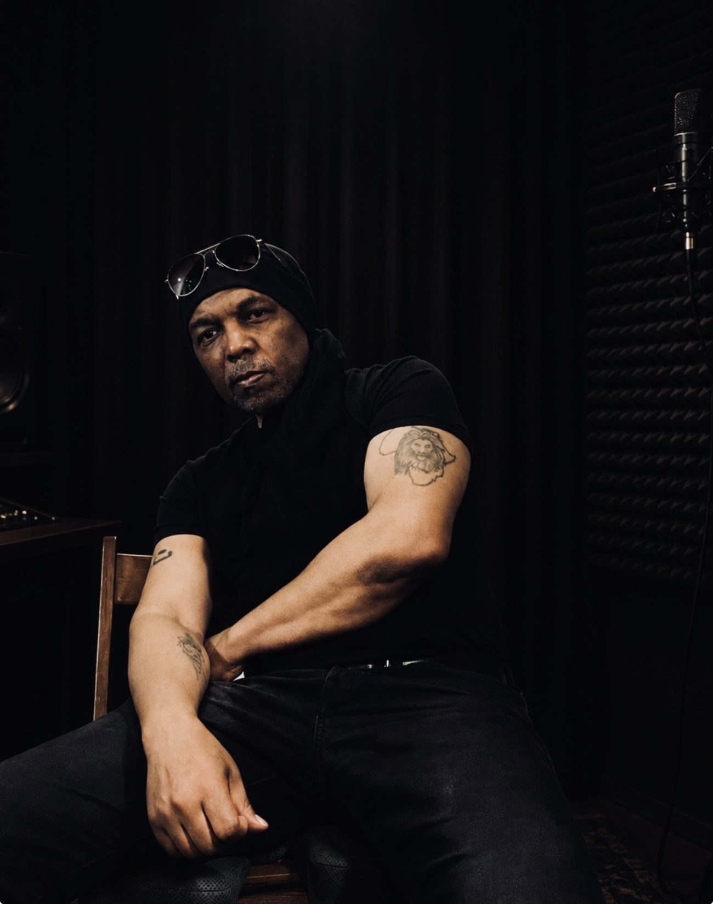
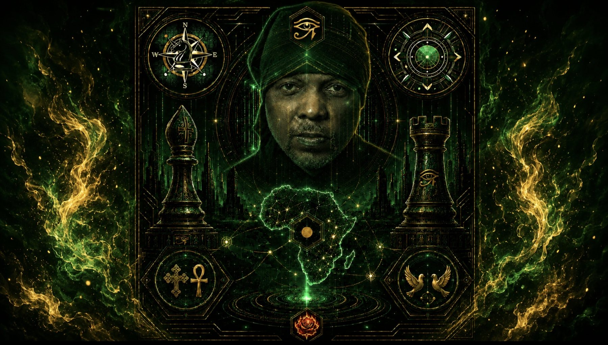

Digital Content Creator · Editor · Strategic Communications Analyst
Nitro Nuri: NYC press photographer, urban art, and spoken word
I've never been content to accept the world at face value. I'm an analyst, field observer, and creative explorer who questions what I see, documents what I discover, and uses photojournalism, music, and storytelling to reveal the deeper connections between people, culture, and the world around us.
( Selected Work )
Civic life, culture, and craft.
Documented in New York. Each project opens into a full gallery with context, credits, and video where it exists.
( Roles )
What I do.
Three disciplines, one method: observe, analyze, express. Each can be commissioned on its own or combined on a single project.



Strategic Analysis & InformationThe Analyst
Research, strategic intelligence, narrative analysis, and information environments, published as data journalism and strategic communications.
Fieldwork & Visual JournalismThe Field Observer
Photojournalism, documentary photography, field research, and visual documentation. NYC Registered Press Photographer covering civic events, parades, protests, and public life. Available for assignment.
Creative Media & ExpressionThe Creator
Music, spoken word, filmmaking, creative direction, and multimedia storytelling. Editorial, fashion, portrait, and fitness photography with a street-level eye, featured in Leica Fotografie International's beauty and fashion gallery. Coverage runs on NuriShakoorTV.
( Sound )
Nitro Nuri
I am a researcher first. These pieces take the habits of analysis (claim, evidence, counterargument) and give them a pulse: 70s soul and spoken word, smooth jazz, soundtrack strings, and the occasional guitar that refuses to behave. Non-commercial, made to be heard.
Linguistic Tradecraft
Words as instruments of precision and of cover.
Shadow House
Spoken word over a funky cinematic soul orchestra on the roots of insurgency, told in metaphors. A masterclass in applied linguistic tradecraft for modern content creation.
The Essay: MIND Under Siege
An argument defended under pressure.
The Orchard of Smoke
A root cause analysis told in creative metaphors.
( Credentials )
Credentials and press.
Verifiable standing, listed plainly. Portfolio profiles and platforms are linked where public.
- ( 001 )NYC Registered Press PhotographerRegistered since 2018 · Current through January 15, 2027 · Renewed every two years
- ( 002 )Leica Fotografie InternationalBeauty and fashion gallery feature
- ( 003 )IEP Positive Peace AmbassadorJournalism framed through Positive Peace
- ( 004 )Photojournalism contributorCurrent contributor to Stringr and StringerHub
- ( 005 )Portfolio profiles500px and The Headshot Crew

( About )
Two desks, one discipline.
I am Nuri Shakoor. By day I am a global security analyst. I spent years as a government contractor, the type Washington calls a Beltway Bandit, and I now study how conflict, governance, and information shape each other.
The camera works the same way. A parade, a protest, a fashion week sidewalk: each is a system with incentives, symbols, and people negotiating space. I photograph the system and the person inside it.
Under Haus of NY Urban Art and NuriA Productions, I shoot editorial, portrait, and civic work across New York as a registered press photographer. As Nitro Nuri, I write spoken word that borrows the structure of an argued essay and the warmth of 70s soul.
Look longer than is comfortable, then say only what you can stand behind.
Nuri Shakoor is a New York press photographer, creative director of Haus of NY Urban Art and NuriA Productions, and spoken-word artist recording as Nitro Nuri. A global security analyst by profession, he documents civic life and culture through the lens of systems and Positive Peace.
( FAQ )
Questions, answered.
Booking, licensing, and press access. Anything else, use the contact form.
001Do you take editorial and news assignments?+
Yes. I am a registered press photographer in New York and cover civic events, cultural events, and breaking public activity. Send the date, location, and deadline.
002Can I license an existing image?+
Yes. Name the image or series, the intended use, and the territory and duration. Licensing terms depend on use.
003Do you shoot portraits and events?+
Yes: individual and professional portraits, editorial sessions, and event coverage. Rates are quoted per project.
004Do you produce video?+
Yes, through NuriA Productions. Event coverage and short documentaries, with examples on NuriShakoorTV.
005Is Nitro Nuri music for sale?+
No. The tracks are non-commercial and shared for listening. For collaboration or performance requests, use the contact form.
006Where is your analytic work?+
On the analytics portfolio at portfolio.mnshakoor.com.
( Contact )
Let's work.
Assignments, licensing, portraits, and collaborations. I reply within two business days.

